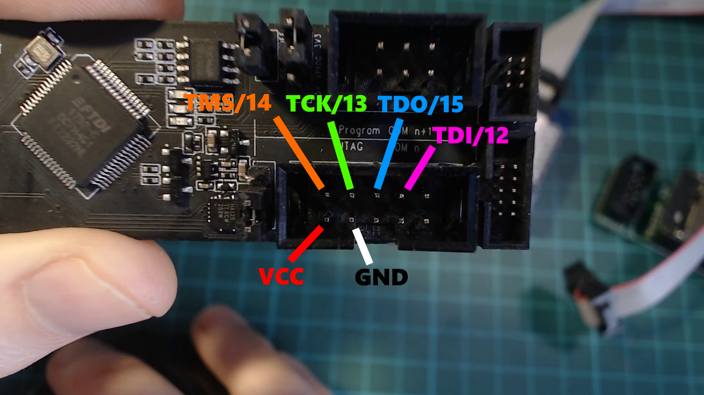
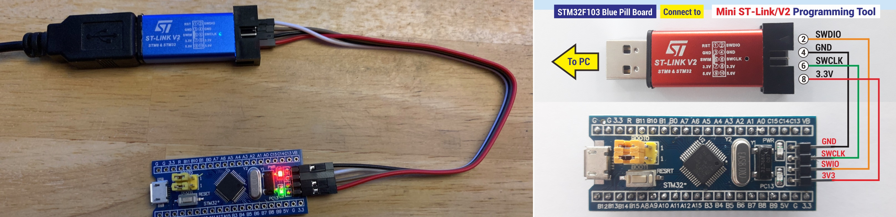
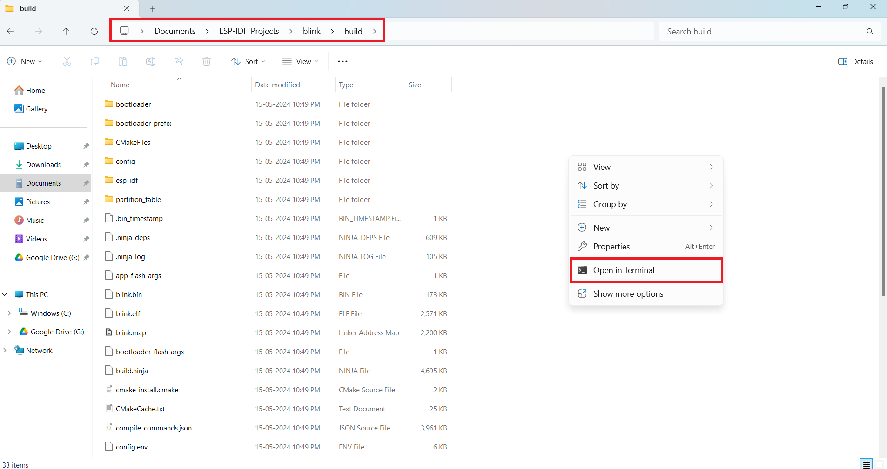
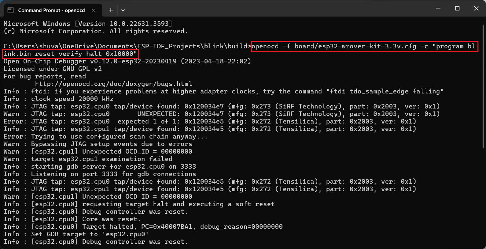
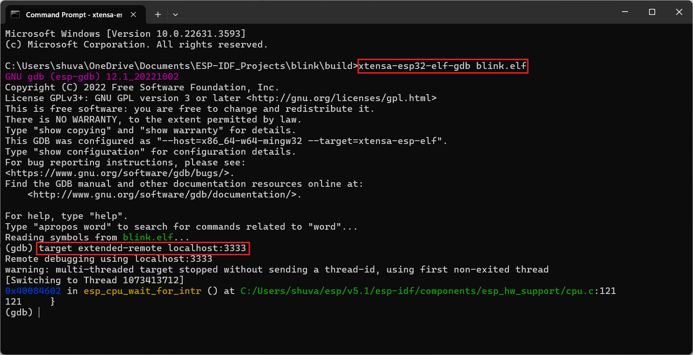
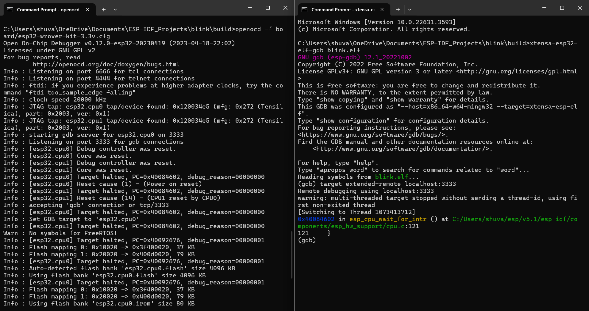

OpenOCD & GDB Documentation
Overview
Complete guide for debugging ESP32 & STM32 using OpenOCD + GDB.
Downloads
OpenOCD ARM ToolchainESP32 Setup

openocd -f board/esp32-wrover-kit-3.3v.cfg
STM32 Setup

openocd -f interface/stlink-v2.cfg -f target/stm32f1x.cfg
GDB Connection
target remote localhost:3333
Telnet
PuTTY → Telnet → Port 4444 → localhost
Debug Steps




Commands
Reset & Flash
monitor reset init # Reset the board monitor reset halt # Reset and halt execution monitor flash erase_address 0x10000 0x2000 monitor flash write_image erase stm32_blink.ino.elf monitor flash write_image blink.bin 0x10000 shell cls # Clear screen (Windows)TUI Mode (ESP32 GDB)
tui enable / tui disable # Toggle UI (Ctrl+X + A) layout asm # Assembly view layout reg # Register view lay next / lay prev # Switch tabs Ctrl+X then 2 # Split screen focus cmd # Focus command line Ctrl+P # Previous commandsBreakpoints
b loop b file.c:19 b stm32_blink.ino:8 d # Delete all d loop # Delete specificExecution Control
c # Continue s # Step into n # Step over fin # Step out where # Show current execution pointVariables & Inspection
p var info variables info registers info functions info stack info frameMemory Inspection
x/10cb buf x/16dw array x/8xb 0x20000000 x/5i mainWatchpoints
watch x rwatch x awatch x info watchpoints delete 1 disable 1 enable 1Memory Dump
dump memory file.bin 0x20000000 0x20000064 dump memory buf_dump.bin buf buf+10 dump i asm.txt main main+100 dump s str.txt buf dump value val.txt varInfo Commands
info breakpoints info watchpoints info variables info functions info scope main info registers info threads info stack info sources info files info line info address main info symbol 0x8002136Conditional Execution
if state == 1 print "LED ON" else print "LED OFF" endbreak loop if state == 1 break main.c:6 if i == 5Source Listing
list list main list 25 list 30,40 list file.c:50
J-Link Debugging

JLinkGDBServerCL -device <DeviceName>